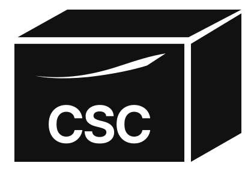

심볼
캐노피와 도크 두 면입니다. 게이트, 앱, 작은 사인에 단독으로 씁니다.
NIKE · LOGISTICS CENTER
상차 도크, 이니셜, 스우시를 한 마크에 모았습니다. 멀리서 봐도 물류센터로 읽히게 했습니다.

구성
캐노피와 도크 두 면입니다. 게이트, 앱, 작은 사인에 단독으로 씁니다.

CSC 아래에 스우시를 깔았습니다. 글자가 이름이고, 스우시가 나가는 흐름입니다.
차량, 출입증, 유니폼용입니다. 심볼과 이름, 스우시가 원 안에 들어갑니다.
쓰는 곳
DOCK
박스 라벨

토트와 박스 라벨용입니다. 상자 앞면에 스우시와 CSC를 스텐실처럼 뺐습니다. 한눈에 화물로 보입니다.
크기